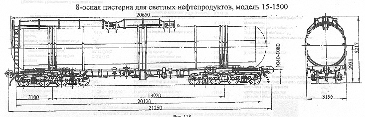

Назначение: для светлых нефтепродуктов (кроме бензина)
Параметры
| Номер проекта | 1500.00.000-2 |
| Технические условия | ТУ24.05.519-81 |
| Модель вагона | 15-1500 |
| Тип вагона | 798 |
| Изготовитель | ПО "Ждановтяжмаш" |
| Грузоподъемность, т | 125 |
| Масса тары вагона, т | 51 |
| Нагрузка: статическая осевая, кН(тс) |
215,8(22) |
| погонная, кН/м(тс/м) | 81,23(8,28) |
| Объем котла, м3 | 161,6 |
| Скорость конструкционная, км/ч | 120 |
| Габарит | 1-Т |
| База вагона, мм | 13920 |
| Длина, мм: по осям сцепления автосцепок |
21250 |
| по концевым балкам рамы | 20120 |
| Высота от уровня верха головок рельсов максимальная, мм | 5217 |
| Количество осей, шт. | 8 |
| Модель 4-осной тележки | 18-101 |
| Наличие переходной площадки | нет |
| То же с ручным тормозом | нет |
| Наличие стояночного тормоза | есть |
| Диаметр котла внутренний,мм | 3200 |
| Длина котла наружная,мм | 20650 |
| Удельный объем, м3/т | 1,25 |
| Количество верхних люков, шт. | 2 |
| Наличие уклона котла к сливному прибору | есть |
| Условное рабочее давление в котле (по регулировке предохранительного клапана), МПа(кгс/см2) | 0,15(1,5) |
| Давление создаваемое в котле при гидравлическом испытании, МПа(кгс/см2) | 0,4(4,0) |
| Количество секций котла, шт. | 1 |
| Наличие паро-обогревательной рубашки | нет |
| Наличие теплоизоляции | нет |
| Наличие теневой защиты | нет |
| Наличие предохранительного клапана | нет |
| Наличие предохранительно-впускного клапана | есть |
| Способ налива и слива | Налив - верхний, слив - нижний самотеком |
| Количество лестниц, шт.: наружных |
2 |
| внутренних | 1 |
| Максимально допустимая температура загружаемого продукта, °C | |
| Год постановки на серийное производство | 1988 |
| Возможность установки буферов | нет |
Примечание:1. изготовлены 2 опытных образца;
2. при переходе на серийное производство лестница перенесена в торец котла
со стороны днища и изменены некоторые параметры: масса вагона(тара) 50,8т; нагрузка от оси колесной
пары на рельс,кН(тс), 215,57(21,975); удельный объем м3/т, 1,29; высота вагона от уровня верха
головок рельсов максимальная, мм 5260